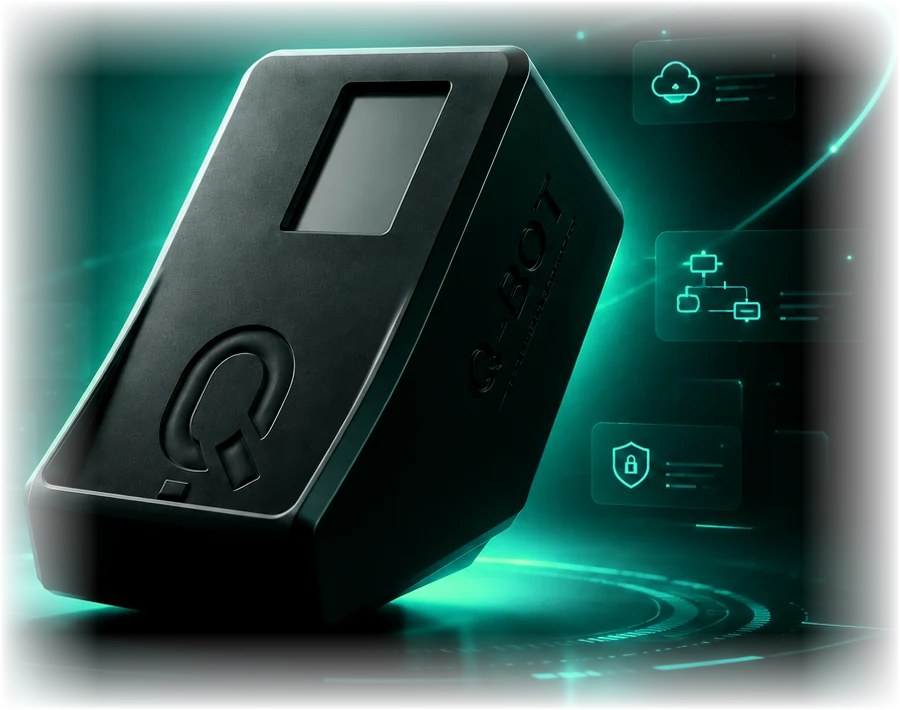
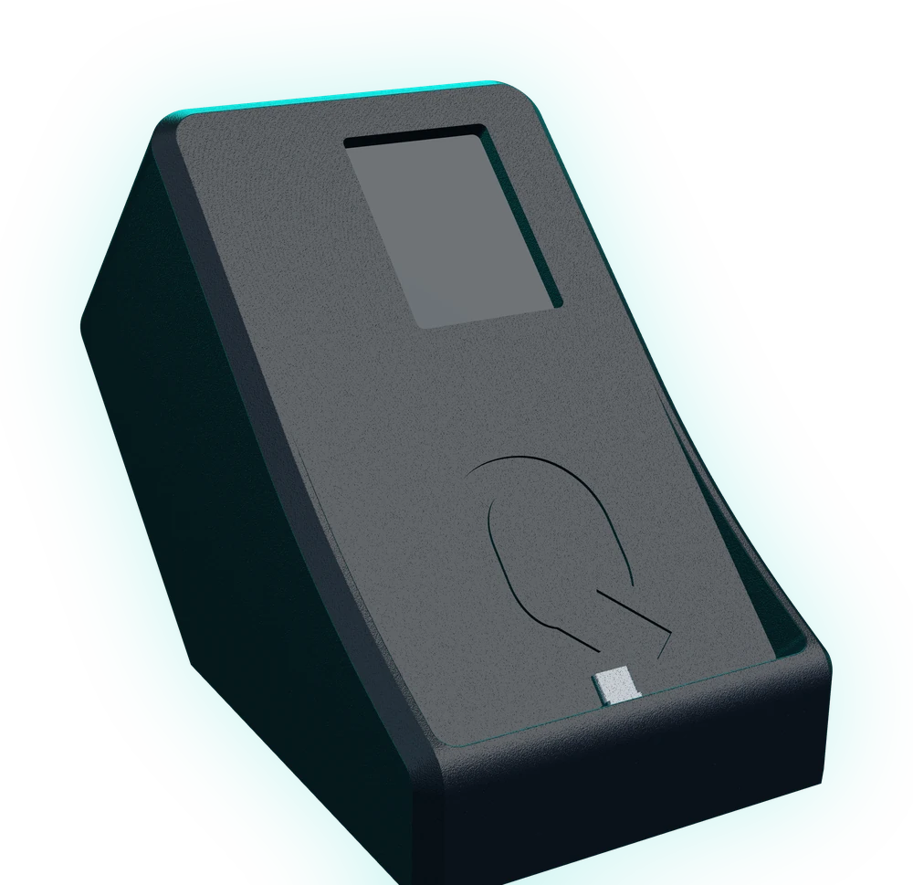
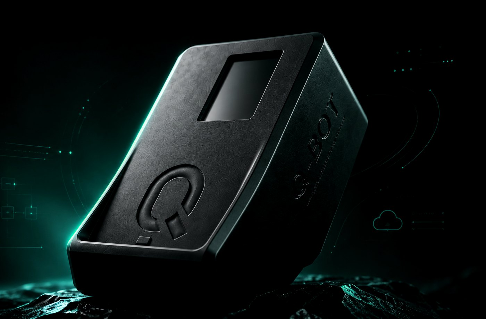
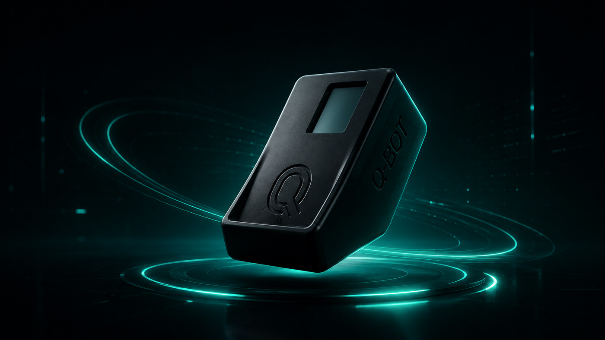
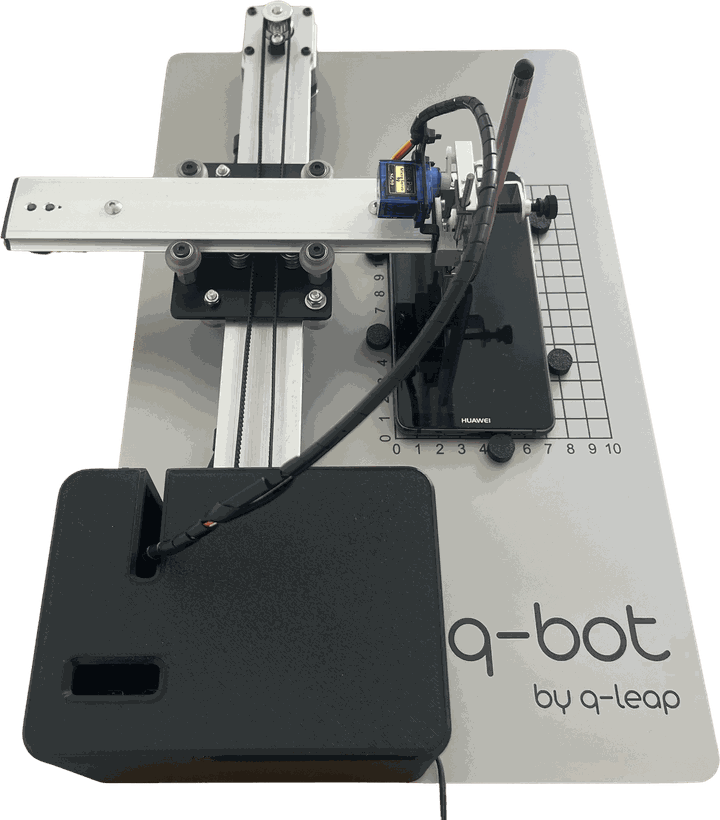

Plug & Play
Aucune installation requise.
Solution unique sur le marché des tests logiciels capable d'automatiser la double authentification, y compris via des dispositifs physiques ou mobiles comme LuxTrust au Luxembourg.


Étape 1 sur 4
Q-Bot s'installe à côté du poste du testeur et se connecte au réseau de l'entreprise. Aucune installation logicielle n'est requise.
L'actionneur déclenche l'affichage du code à usage unique, la caméra le capte, la vision par ordinateur en extrait la valeur. La photo est supprimée juste après.
< 10 secondes pour récupérer le code
Un Raspberry Pi 5 — Cortex A76, 4 GB — coordonne l'ensemble. Pilotage par interface web ou par API REST, depuis Selenium, Cypress, Appium ou vos pipelines.
Pi 5 Wi-Fi, Bluetooth 5.0 BLE, Gigabit Ethernet
40 × 24 × 15 cm, conçu et fabriqué au siège de Q-Leap à Bertrange. Le format est pensé pour ne pas encombrer un bureau.
A3 29,7 × 42 cm d'emprise au sol
Réserver une démoCette solution s'intègre à toutes vos campagnes d'automatisation pour gérer les parcours utilisateurs nécessitant une authentification forte, sans intervention manuelle.
En savoir plus

Q-Bot, solution 100 % Made in Luxembourg, automatise la double authentification (2FA), que ce soit via des applications mobiles comme LuxTrust — la solution majoritaire au Luxembourg — ou via d'autres dispositifs similaires déployés dans différents pays.
Automatiser la double authentification dans 100% des cas de tests
Aucune installation requise.
Réaction immédiate sans latence.
Efficace à 100%
Accessible via une interface web ou une API
Q-Bot ne nécessite aucune installation ni aucune configuration. Créez visuellement votre scénario et commencez à l'utiliser immédiatement !
Caractéristiques techniquesQ-Bot pour tous les professionnels de l'IT
Q-Bot prend en charge vos projets de tests, d'intégration et d'automatisation des processus métiers (RPA – Robotic Process Automation), nécessitant une validation sécurisée par double authentification mobile.
Q-Bot prend en charge vos applications Web, Mobile ou Desktop. Les cas d'utilisations sont nombreux : authentifier un utilisateur, créer un compte utilisateur, confirmer une transaction e-commerce, réinitialiser le mot de passe d'un utilisateur, valider un transfert d'argent, signer un document, demander un document officiel...
Q-Bot est le fruit du savoir-faire de l'équipe Q-Leap. Imaginée et développée dans nos locaux par des experts passionnés du test logiciel, cette solution est née d'un besoin concret rencontré sur le terrain — le nôtre, mais aussi celui de nos clients.
Compatible avec Selenium, Katalon, Robot Framework, et toutes les autres solutions d'automatisation grâce à son API simple et sécurisée.
Du portique assemblé dans nos locaux au boîtier compact d'aujourd'hui.

Un portique motorisé monté à la main : deux axes, un stylet capacitif, un smartphone posé à plat. Il a prouvé qu'une double authentification pouvait être validée sans personne devant l'écran.
Toute la mécanique tient désormais dans un boîtier fermé, conçu et fabriqué au Luxembourg. Le smartphone vient se placer à l'avant : même principe, une fraction de l'encombrement.
Explorer le modèle 3DLa feuille de route de la prochaine génération s'écrit en ce moment, avec les équipes qui utilisent Q-Bot au quotidien. Une évolution vous manque ? Dites-le-nous.
Proposer une évolutionQ-Bot est un robot unique en son genre, conçu pour automatiser la double authentification (2FA), qu'elle s'appuie sur des applications mobiles d'authentification transactionnelle ou sur d'autres dispositifs sécurisés.
Grâce à Q-Bot, qui authentifie automatiquement vos accès, il devient possible d'automatiser des processus de test jusque-là difficilement accessibles, notamment ceux nécessitant une validation 2FA.
Q-Bot permet d'automatiser l'exécution des cas de test les plus critiques qui jusqu'ici ne pouvaient l'être à cause de la contrainte des apps d'authentification.
Toutes les fonctionnalités qui requièrent l'utilisation d'une double d'authentification ne peuvent être automatisées sans un robot comme Q-Bot.
Les testeurs ont comme objectifs de valider que les applications sont conformes aux exigences définies en amont.
Pour les activités de test, Q-Bot est une solution simple, sûre et efficace : facile à utiliser, sans installation logicielle, avec une exécution rapide et une précision parfaite.